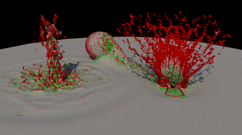
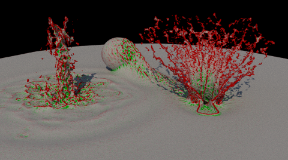
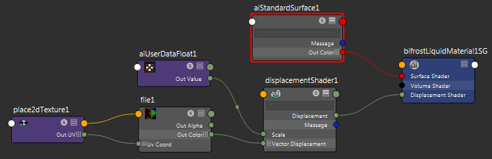

“bifrostShape”节点是“Bifrost”对象的子对象。它表示 Bifrost 生成的数据。使用其属性可控制数据的渲染方式以及在视口中的显示方式。
显示(Display)
控制形状在 Viewport 2.0 中的显示。
- 显示边界框(Display Bounding Box)
- 显示形状的边界框。
-
粒子(Particles)
- 显示形状的粒子。使用“粒子显示”(Particle Display)属性可以进一步控制粒子的显示。请注意，如果也显示体素，粒子可能不可见。
- 体素(Voxels)
- 显示形状体素的等值面。确保将视口设定为一种着色模式。使用“体素显示”(Voxel Display)属性来进一步控制显示。
- 体素类型(Voxel Type)
-
控制如何在视口中渲染体素。
- “体积”(Volumetric)使用透明度渐变渲染穿过该体积的烟通道的累积。用于 Aero 模拟。
- “级别设置”(Levelset)不透明地渲染流体表面。用于液体模拟。
粒子显示(Particle Display)
控制当“粒子”(Particles)在“显示”(Display)属性中处于选中状态时的显示。
-
类型(Type)
- 将粒子显示为“点”(Point)精灵或“球体”(Sphere)实例。
-
最大粒子显示数(Max Particle Display Count)
- 允许您在视口中显示比实际模拟更少的粒子，以加快绘制并释放图形内存，同时仍显示有用的总体粒子流预览。
请注意，对于非常低的值，显示的粒子数可能会超过“最大粒子显示数”(Max Particle Display Count)，因为粒子尽可能均匀分布在体素中。
此外，粒子成批绘制，因此显示的粒子可以比图形内存一次可容纳的粒子多。但是，绘制和交互速度会变慢。
注： 如果此值相对于粒子总数而言较小，您可能会注意到视口中出现瑕疵，例如重复的粒子分布。但是渲染不受影响。
-
点大小(Point Size)
- “点”(Point)精灵的大小（以像素为单位）。
-
球体半径(Sphere Radius)
- “球体”(Sphere)实例的半径（以场景单位表示）。
- 渲染粒子大小(Render Particle Size)（仅泡沫形状）
-
控制渲染的泡沫粒子的大小。
- 最小级别(Min Level)、最大级别(Max Level)
- 限制为显示存储在指定平铺深度之间的体素中的粒子。这可用于空间自适应模拟。在非自适应模拟中，粒子始终以级别 7 存储。
-
颜色(Color)
- 将选定的“颜色通道”(Color Channel)显示为颜色渐变。这对于预览或诊断模拟非常有用。使用“颜色通道重映射”(Color Channel Remap)属性可以控制颜色的显示方式。
颜色通道重映射(Color Channel Remap)
- 颜色通道最小值(Color Channel Min)、颜色通道最大值(Color Channel Max)
- 使用这些属性可选择要映射到颜色的值范围。超出此范围的值会剪裁至相应的颜色渐变末尾。
- 颜色渐变(Color Ramp)
- 使用颜色渐变可以定义从“颜色通道最小值”(Color Channel Min)到“颜色通道最大值”(Color Channel Max)的渐变。向量属性使用幅值来推动颜色渐变。
- 值渐变(Value Ramp)
- 在应用颜色渐变前，可以使用值渐变修改颜色通道值。这有助于对显示进行更精细的控制，例如，您可以钳制和偏移值以聚焦一个特定范围。
-
不透明度(Opacity)
-
使用选定的“不透明度通道”(Opacity Channel)可以控制视口中的不透明度。使用“不透明度通道重映射”(Opacity Channel Remap)属性可以控制颜色的显示。它们的工作方式与“颜色通道重映射”(Color Channel Remap)属性相同。
- 数值(Numeric)
- 在视口中显示所选“数值通道”(Numeric Channel)的数值。
提示： 减小“最大粒子显示数”(Max Particle Display Count)可获得所显示值的可读采样。
- 向量(Vector)
- 在视口中以向量显示所选“向量通道”(Vector Channel)。
体素显示(Voxel Display)
控制当“体素”(Voxel)在“显示”(Display)属性中处于选中状态时的显示。
- 过滤器(Filter)
-
控制在视口中渲染体素所用的插值。“三元三次”(Tricubic)提供了比“三线”(Trilinear)更平滑的效果，尤其是对于 Aero 模拟更是如此。
-
质量(Quality)
- 控制用于在视口中绘制体素的相对采样数。
-
诊断颜色(Diagnostic Color)
-
切换通道颜色的显示以用于诊断目的。
- 启用此选项后，可以选择“颜色通道”(Color Channel)，然后使用“颜色通道重映射”(Color Channel Remap)选项调整颜色渐变。它们的工作方式与粒子显示的“颜色通道重映射”(Color Channel Remap)属性相同。
- 禁用此选项后，视口将使用照明显示流体曲面级别设置的预览。
剪裁(Clipping)
通过“片段输入网格”(Clip Input Mesh)，可以使用网格对象作为剪裁边界预览 bifrostShape 的切片。这将有助于可视化模拟的内部情况，以进行诊断或用于其他用途。
平铺视图(Tile View)
将模拟中体素分辨率的范围显示为颜色映射的平铺树。对于可视化在模拟的内部区域中发生的情况以用于诊断目的，这是很有用的，尤其是在“自适应性”(Adaptivity)已启用时。
请参见使用平铺视图预览 Bifrost 体素分辨率。
显示(Display)
-
启用(Enable)
- 启用和禁用平铺树的显示。
- 最小级别(Min Level)、最大级别(Max Level)
- 使用这些控制可设置要显示的分辨率级别的范围。有八个显示级别，起始于非常粗糙（级别 0），直到精细（级别 7）。这些级别对应于模拟中体素分辨率的范围。
- 聚焦级别(Focus Level)
- 可用于着重显示介于设置的“最小级别”(Min Level)和“最大级别”(Max Level)范围之间的特定级别。
- 聚焦衰减(Focus Falloff)
- 通过控制所显示的每个级别之间的透明度，设置焦点的宽度。增大此值可使查看叠加的所有显示级别变得更容易。值 0 仅显示由“聚焦级别”(Focus Level)设置的级别。值 1.0 显示由“最小级别”(Min Level)和“最大级别”(Max Level)定义的所有平铺。
剪裁(Clipping)
- 片段输入网格(Clip Input Mesh)
-
允许您使用多边形网格设置平铺视图的剪裁边界。这样就可以隔离模拟的切片以进行调查。
颜色(Color)
使用颜色渐变可以为可见的平铺级别设置开始和结束颜色。颜色由体素分辨率驱动。渐变的最左侧标记设置表示“最小级别”(Min Level)的颜色，最右侧标记设置表示“最大级别”(Max Level)的颜色。
渲染(Render)
“渲染”(Render)组中的设置控制 Bifrost 形状的各种属性，这些属性可供渲染器（例如 Arnold）使用。请注意，如果您使用的是其他渲染器，这些属性可能不受支持。
注： 在 Maya 2018 和 Maya 2018.1 Update 中，其中某些属性位于 Arnold 组中，且仅当安装了 Arnold 和
mtoa.mll 插件时才会显示。在更高版本的 Maya 中，这些属性适用于任何渲染器，但可能不受支持。
- 渲染为(Render As)
- 选择如何渲染形状。通常，使用情况如下：
- 对液体使用“曲面”(Surface)。
- 对泡沫使用“点”(Points)。
- 对 Aero 使用“体积”(Volume)。对泡沫不支持此项。但是，仍可以使用“点”(Points)或“曲面”(Surface)通过体积着色器渲染泡沫。
- 速度比例(Velocity Scale)
- 速度的倍增。这会影响运动模糊。
- 空间比例(Space Scale)
- 统一形状的比例因子。这可以用作在场景中缩放形状的替代方法。
- 导出通道(Export Channels)
- 要导出的通道列表。如果您要连接值作为着色网络中的用户数据，则必须导出通道。多个通道名称之间使用空格分隔。对导出可能有用的一些通道包括：
曲面控件
在“渲染为”(Render As)设置为“曲面”(Surface)时应用这些属性。
- 渲染组件
-
- “体素”(Voxels)选项将流体曲面渲染为体素上存储的带符号距离场的等值面。对泡沫不支持此项。
- “粒子”(Particles)选项从流体粒子创建新的带符号距离场，并启用下方的控制。此选项类似于使用形状的“网格控制”(Mesh Controls)，但不会在场景中创建网格。
-
水滴显示因子(Droplet Reveal Factor)
- 创建和保留生成和平滑网格时在飞溅周围的细节。较低的值会产生较平滑的网格，而较高的值会产生更小的高频率细节。
-
曲面半径(Surface Radius)
- 用于创建曲面的每个粒子水滴的半径，是“主体素大小”(Master Voxel Size)的倍数。
-
水滴半径(Droplet Radius)
- 每个水滴的半径，相对于“主体素大小”(Master Voxel Size)。
-
内核因子(Kernel Factor)
- 控制曲面平滑内核的宽度。较小的值可在生成的网格中产生更清晰的特征和更高的曲率。较大的值可产生更为平滑的特征。
-
平滑处理(Smoothing)
- 在网格上执行的平滑步骤数。
-
分辨率因子(Resolution Factor)
- 生成网格前用于调整粒子分辨率的比例因子。较高的值会创建更高频率的细节，但计算时间会较长。
- 孔终止阈值(Hole Kill Threshold)
-
增加该值以消除流体内部的网格化孔。特别地，对空间自适应模拟使用高“分辨率因子”(Resolution Factor)值时，很可能会出现这样的洞。
处理(Processing)
控制如何处理曲面。首先，放大曲面，然后平滑曲面，最后腐蚀曲面。
- 放大(Dilate)
- 在平滑之前要从带符号距离场减去的值。这会在平滑时扩展曲面以避免收缩，并有助于保留较小的特征。
- 平滑(Smooth)
- 在每次迭代中应用的平滑量。通常，值应介于 0 和 1 之间。值大于 1 会导致扭曲。
- 平滑模式(Smooth Mode)
-
选择要执行的平滑类型。结果类似，但不完全相同。可根据喜好进行选择。在图中，红色区域向内平滑，绿色区域向外平滑。
- LaplacianFlow 在每次迭代中添加指定数量的带符号距离场的 Laplacian。

- CurvatureFlow 在每次迭代中添加指定数量的平均曲率。

- 平滑迭代次数(Smooth Iterations)
- 重复平滑操作的次数。有时以较小的量重复平滑比以较大的量一次平滑效果更好。
- 腐蚀(Erode)
- 在平滑之后要添加到带符号距离场的值。这会收缩曲面并防止其呈现“滴状”。
海洋混合(Ocean Blending)
这些属性使用平面网格执行简单的流体曲面融合。例如，如果您在特定区域对波浪和飞溅使用 Bifrost 模拟，对海洋表面其余部分使用网格，可以将这些属性用于海洋。
为了获得最佳结果，请使用平坦平面网格和置换着色器（如 BOSS 生成的向量置换贴图）。变形的网格也可以产生可接受的结果，前提是置换不太大（换句话说，是平静的水面而非波涛汹涌的海面）。在任一情况下，如果液体可从周围海洋流入，则可能会填充模拟曲面中的凹陷。
- 启用(Enable)
- 启用海洋融合。
- 网格平面(Mesh Plane)
- 要与 Bifrost 形状融合的网格。
- 边界半径(Boundary Radius)
- 模拟和网格曲面的相交处周围融合区域的半径。
- 偏移(Offsets)
- 可以使用 Y 偏移升高或降低网格平面以改进融合。X 偏移和 Z 偏移可用于调整平面的水平范围：使用正值将其展开或使用负值将其收缩。
- 输出通道(Output Channel)
- 在置换融合网格时要用作遮罩的自定义通道的名称。如果要使用置换与平面网格融合，请务必确保将此通道添加到“导出通道”(Export Channels)列表，然后使用通道控制置换量。
要指定用于海洋融合的网格平面，请执行以下操作：
- 选择“启用”(Enable)。
- 执行下列操作之一：
- 在属性编辑器菜单中，选择“列表”(List)，然后禁用“自动加载选定属性”(Auto Load Selected Attributes)。这将禁用 Maya 加载选定对象的属性这一默认行为。选择平面网格时，当前属性现在将在“属性编辑器”(Attribute Editor)中保持加载状态。
- 选择“属性编辑器”(Attribute Editor)底部的“复制选项卡”(Copy Tab)，以在浮动窗口中创建 Bifrost 对象属性的副本。
- 选择要用作海洋表面的网格。
- 单击“使用选定对象”(Use Selected)。
- 隐藏网格以防止其渲染。您应仅渲染融合的曲面，
要使用置换与平面网格融合，请执行以下操作：
- 指定已为其创建置换贴图作为网格平面的平面。
- 指定要用于融合的输出通道的名称。默认值为 ocean。
- 将相同的通道名称添加到“导出通道”(Export Channels)列表。
- 在 Hypershade 窗口中，将置换着色器添加到液体材质。有关在 Hypershade 窗口中进行操作的常规详细信息，请参见 Hypershade 窗口。
- 将“文件”(File)纹理节点连接到置换着色器的“向量置换”(Vector Displacement)属性。
- 在“文件”(File)节点的“图像名称”(Image Name)属性中指定置换贴图。
- 使用工具着色器获取您指定的输出通道（如 ocean），并将其连接到置换着色器的“缩放”(Scale)属性。着色器的名称和此步骤的过程取决于您的渲染器。

- 调整“边界半径”(Boundary Radius)和“偏移”(Offsets)来控制融合。
要与变形的网格融合，请执行以下操作：
- 指定变形的平面作为网格平面。
- 调整“边界半径”(Boundary Radius)和“偏移”(Offsets)来控制融合。
高级(Advanced)
- 导出 Laplacian (Export Laplacian)
- 导出带符号距离场的 Laplacian。这将使 laplacian 通道可以用作着色网络中的用户数据。
- 导出曲率(Export Curvature)
- 导出等值面的平均曲率。这将使 curvature 通道可以用作着色网络中的用户数据。
点控件
“渲染为”(Render As)设置为“点”(Points)时应用这些属性。
- 半径(Radius)
- 点的半径（以场景单位表示）。
- 将半径与通道相乘(Modulate Radius With Channel)
- 使“半径”(Radius)乘以指定的“半径通道”(Radius Channel)。例如，如果“半径通道”(Radius Channel)设置为 density，则密度较高的地方点较大，密度较低的地方点较小。
体积控件
“渲染为”(Render As)设置为“体积”(Volume)时应用这些属性。
- 平滑(Smooth)
- 在每次迭代中应用的平滑量。
- 平滑迭代次数(Smooth Iterations)
- 平滑迭代次数。
Bifrost 网格(Bifrost Meshing)
-
启用(Enable)
- 生成 bifrostMesh 对象的多边形网格。
-
水滴显示因子(Droplet Reveal Factor)
- 创建和保留生成和平滑网格时在飞溅周围的细节。较低的值会产生较平滑的网格，而较高的值会产生更小的高频率细节。
-
曲面半径(Surface Radius)
- 用于创建曲面的每个粒子水滴的半径，是“主体素大小”(Master Voxel Size)的倍数。
-
水滴半径(Droplet Radius)
- 每个水滴的半径，相对于“主体素大小”(Master Voxel Size)。
-
内核因子(Kernel Factor)
- 控制曲面平滑内核的宽度。较小的值可在生成的网格中产生更清晰的特征和更高的曲率。较大的值可产生更为平滑的特征。
-
平滑处理(Smoothing)
- 在网格上执行的平滑步骤数。
-
分辨率因子(Resolution Factor)
- 生成网格前用于调整粒子分辨率的比例因子。较高的值会创建更高频率的细节，但计算时间会较长。
- 孔终止阈值(Hole Kill Threshold)
-
增加该值以消除流体内部的网格化孔。特别地，对空间自适应模拟使用高“分辨率因子”(Resolution Factor)值时，很可能会出现这样的洞。
-
翻转面法线(Flip Face Normals)
- 反转最终网格的三角形中的顶点索引顺序，以便翻转法线。
剪裁(Clipping)
通过“片段输入网格”(Clip Input Mesh)，可以将多边形对象用作剪裁边界，预览 Bifrost 输出网格的切片。这将有助于可视化模拟的内部情况，以进行诊断或用于其他用途。
通道传递(Channel Transfer)
-
速度比例(Velocity Scale)
- 在网格上将速度通道从体素传递到顶点颜色贴图时使用的一组 XYZ 比例因子。